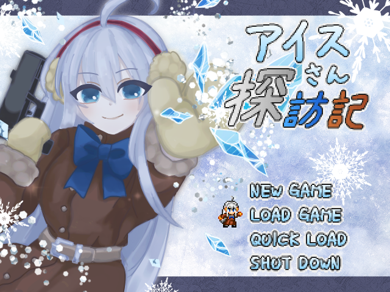
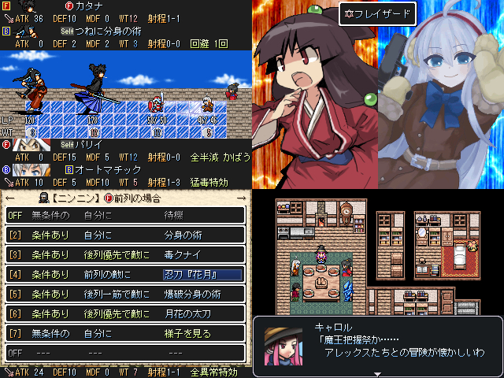

アイスさん探訪記


作品メニュー
詳細情報
- 作者
- 89
- ジャンル
- RPG
- ツクール
- RPG Maker 2003
- 配信/投稿
- OK/OK
- コメント
紅白に初参加させて頂く。もしもゲー初めて作りました。
WT制 サイドビュー自作戦闘ボスラッシュ魔王把握RPG (運要素なし、雑魚戦なし、ダンジョン探索なし)
魔王把握祭…年に一度開催される祭りの主役にアイスさんが選ばれた。 RTP大陸を駆け廻りバトルに勝って全員吹っ飛ばせ！
ヘレン風の戦闘システムをもとに人数が2対2に増えたバトル。 アイスさんはふたつの装備武器の組み合わせで大きく戦闘スタイルが変わります。 仲間は事前に決めた作戦にしたがって自動で動く。アイスさんと仲間が同時に攻撃すると連携攻撃に！ 敵の行動の隙をよく観察しながら、仲間と協力しあって戦いましょう。
本編クリアまで約3～6時間です(思考時間やプレイ方針により変化)。
- 管理人から一言
 1発目から凄そうなのｋｔｋｒｗｗｗ
1発目から凄そうなのｋｔｋｒｗｗｗ